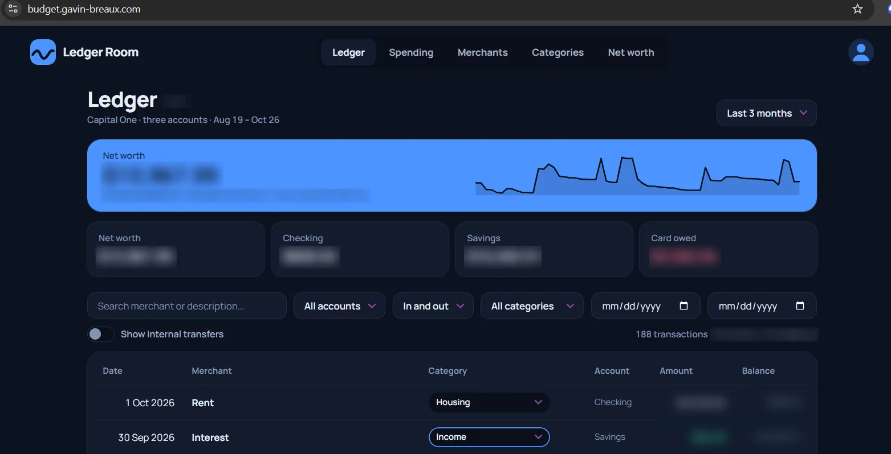
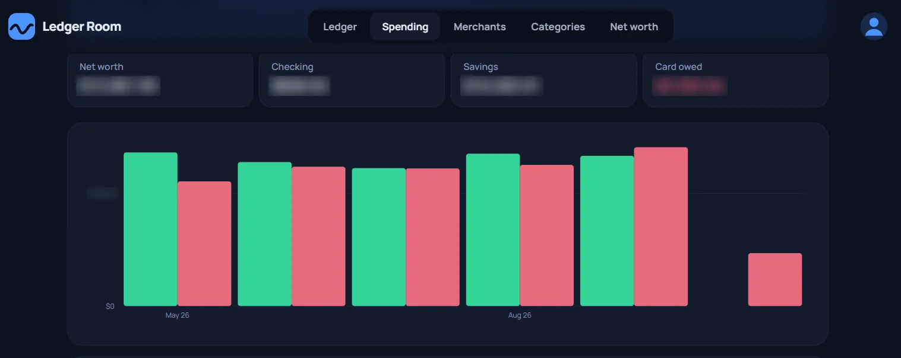
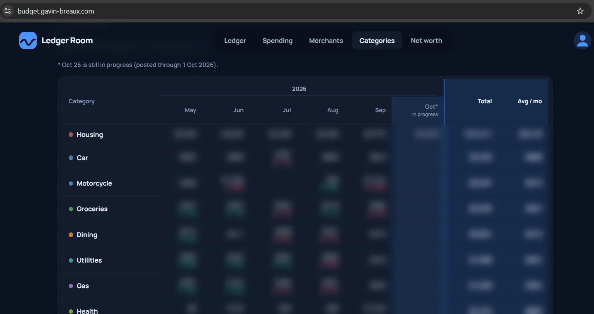
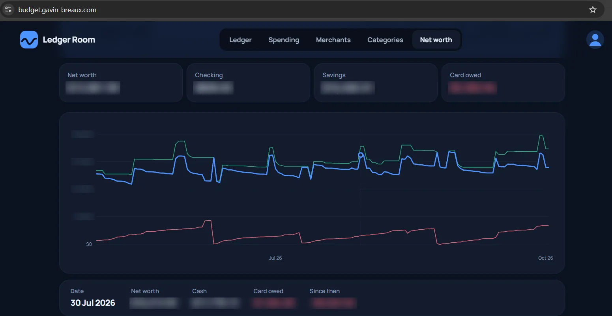

A spiteful build
To be honest, I didn't want to build the app. Budget apps are completely overdone, but I could not find an app that fit what I wanted and actually WORKED (that's a why-is-it-so-hard-to-make-an-app-that-doesn't-delete-my-data driven all-caps). So I built a budgeting web app reaching back 4 years across a checking and savings account, and a credit card, usable from a phone or a PC, with passkey authentication. I built it with Claude Code, so most of the work was proving that it works.




Here are some of the more important decisions made in the project. The first problem was the initial import path (CSV exports, then PDF statements) that loaded the history. The historical data was buried in old bank statements with only short-term export options, so step 1 was to gather it all. Once all of it was gathered I switched to SimpleFIN only, so those entries are kept as history.
Developing with AI assistance changes the source of issues. Bad or outdated documentation is often caught by a human when they go to modify that part of the code, but AI is happy to write code consistent with bad documentation. Having the right tests feels good enough, but written wrong they surprisingly eat up a lot of dev time.
The same numbers are checked twice, by two scripts that share no code. If they ever disagree, something is wrong.
This project was built with Claude Code, and that shaped what I spent my attention on. Creating code is fast, so the real job now is knowing whether it's right, which is why the verification checks, balance requirements, and a habit of reproducing an agent's findings before accepting them (or worse, writing code on them) is the new coding.
The app is in daily use. The history came in through CSV and PDF statement imports. Once all of it was stored in the database, I switched to SimpleFIN only, and a scheduled job now syncs new transactions each morning. At this point, the app's developments are improving the UI and visualizing the data I really wanna see.